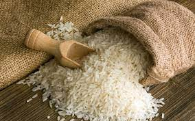
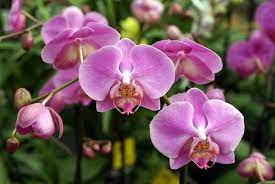
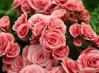
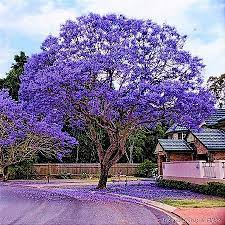

É uma planta pertence à família Fabaceae, família esta que compreende também plantas como o feijão,
a lentilha e a ervilha. A palavra "soja" vem do japonês shoyu.
Originária do Japão e China
Milho
Cultivado em grande parte do mundo e extensivamente utilizado como alimento humano ou para ração
animal devido às suas qualidades nutricionais.
Originário do México
Cana-de-açúcar
É utilizadas principalmente para a produção de açúcar e etanol. Tem caules robustos, fibrosos e
articulados que são ricos em sacarose. Ela pode chegar a até seis metros.
Originária do sul da Ásia
Café
A semente é uma pequena esfera verde, que quando atinge o estado maduro para a colheita tem um
vermelho intenso.
Originário da Árabia
Algodão
Caracterizada por sua fibra macia e curta, que é amplamente utilizada na indústria têxtil para a
produção de tecidos, roupas e outros produtos.
Originário do Nordeste Brasileiro

Arroz
Para poder ser cultivado com sucesso, o arroz necessita de água em abundância, para manter a
temperatura ambiente dentro de intervalos adequados.
Originário da Ásia

Orquidea
Reverenciada por sua beleza, a orquídea tem formato e combinação de cores específicas para cada
espécie. Ela é comum nas matas e florestas.
Originária do Japão e China
Bromélia
Essa espécie brasileira tem grande resistência e capacidade de sobrevivência, além de apresentar uma
grande variedade de formas, tamanhos e cores.
Originária do Brasil

Begonia
A begônia é uma flor delicada nas suas tonalidades de vermelho, branco ou rosa. Se você observar com
atenção, inclusive, perceberá que suas folhas sugerem o desenho de um coração.
Originária da América Tropical

Jacarandá
O tamanho de uma jacarandá varia entre arbusto e árvore de grande porte, como é o caso daquelas que
atingem até 30 metros de altura. A madeira dessa espécie foi bastante explorada.
Originária da Bolivia, Brasil e Argentina
Camélia
A camélia enfeita divinamente tanto jardins tradicionais quanto jardins de inverno. Conforme a
variedade, a flor pode ser branca, vermelha ou rosada.
Originária da Europa
Onze-horas
As pétalas se abrem durante o dia e, ao escurecer, fecham; daí o seu nome “onze-horas”. A plantinha
é um lindo complemento para canteiros e vasos de plantas maiores.